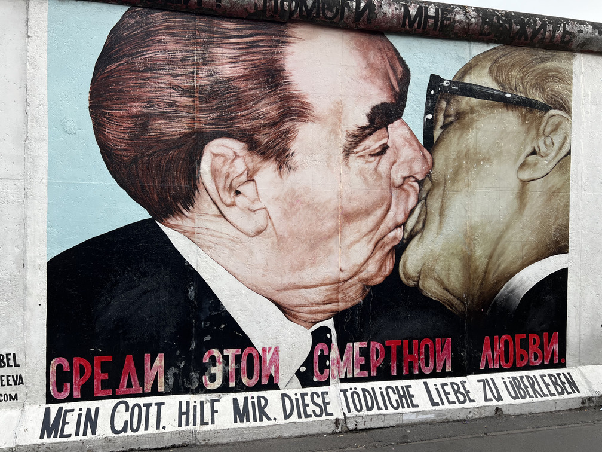
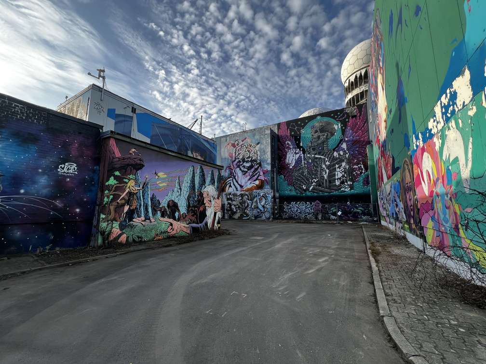
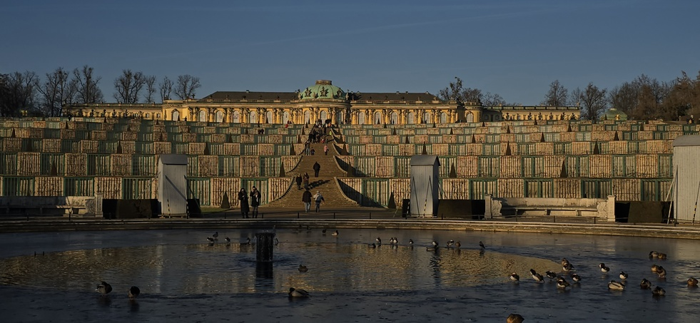

Exploring
Berlin
Through My Lens
A collection of places I've visited in Berlin
while discovering the city one neighborhood
at a time.
PLACES I'VE VISITED
VIEW ALL PLACES
Teufelsberg
Grunewald
A man-made hill built from World War II rubble, Once home to a Cold War NSA listening station.
Today it is known for its vibrant street art!

Schloss Sansccousi
Potsdam
Built as the private retreat of King Frederick the Great, Schloss Sanssouci is where royal elegance meets peaceful gardens.
Treptower Park
Treptow-Köpenick
Peaceful park with beautiful views and a huge Soviet War Memorial.

Viktoriapark
Kreuzberg
A hidden oasis in the heart of Berlin, famous for its cascading waterfall and panoramic views from the hilltop.